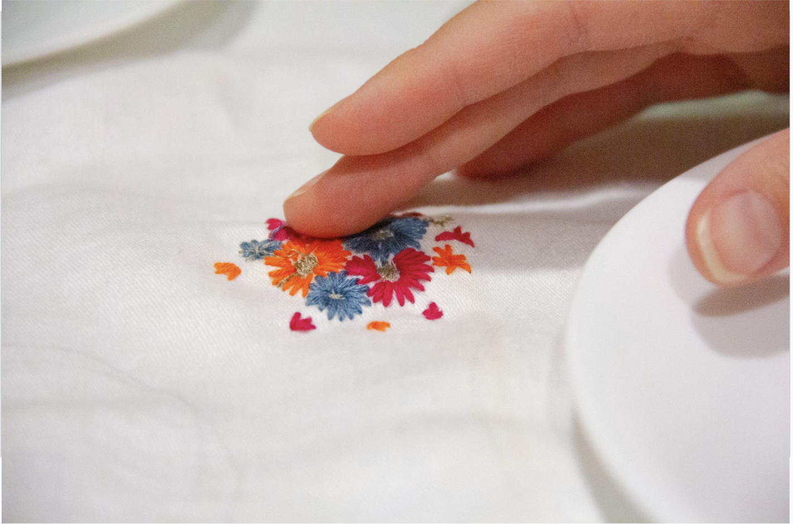
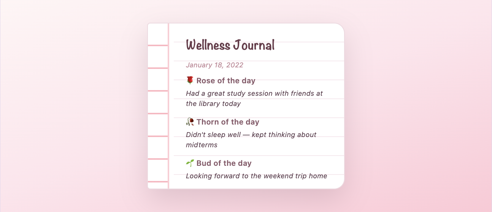

hi, i'm grace 💕
software engineer · creative coder · product designer
I'm a product-minded software engineer with 3 years of experience building interaction systems, distributed systems, and physical-digital systems.
My passion lies in tangible user interfaces, product development, and the interaction design. I am deeply interested in creating meaningful human computer user experiences, especially pushing for ubiquitous computing.
projects
things i've built and shipped

Explores the theme of TeleAbsence through interactive installations over textiles and immersive experiences.
An autonomous, multi-agent health-intelligence app that unifies labs, cycle, nutrition, fitness, and sleep for women.
AI-powered temperature monitoring system for temperature prediction, providing real-time data visualization and alerts.

Full-stack wellness journaling web app with structured daily prompts, mood tracking, and secure authentication.
resume.pdf
experience & education
Led the end-to-end architectural modernization for the Windows Privacy Settings page, serving over 4 million monthly active users. Engineered a modernized library of reusable template components and a cohesive handler system that reduced UI rendering time by 33%. Bridged the gap between complex telemetry data and intuitive user experiences through AI-driven interaction patterns for 43 permission modules to enhance user clarity and data transparency.
Integrated a new personality role in Jibo social robot reading station to help strengthen parent-child relationship through integrating backend scripts and refined haptic interface.
Focus in systems and human-computer interaction. Senior thesis on tangible user interface.
my journey as a Christ follower
what grounds and guides me
Before anything, I am first and foremost a Christian. My faith is the foundation of who I am and how I approach my work. It shapes how I build, collaborate, and serve others through technology.
I believe that every line of code can be an act of stewardship — using the gifts and talents I've been given to make a positive impact in the world.
In this specific season, God is fine-tuning my heart and making it align more with His. He has shown me how perfect love can cast out all fear, and instead make room for joy, peace, and compassion.
Here I have coded a calendar to celebrate one win each day — because every small step forward is still a step worth honoring. This is to remind me that God is faithful in the little things, and that His grace is sufficient for me every single day.